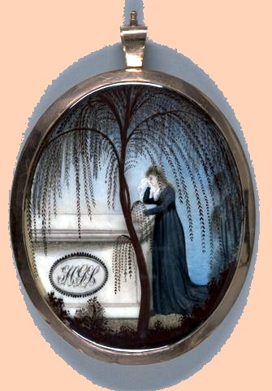

Henry Staats
Henry Staats was born in July 1764. He was the last (and possibly eighth) child born to the marriage of Gerrit and Debora Beekman Staats. His mother died shortly after Henry's birth. His father does not seem to have remarried but may have lived much longer. Sometimes, this individual was referred to as Henry G. Staats. His slightly older brother was Albany resident Barent G. Staats.
About the time of his birth, Gerrit Staats relocated to the family home on Staats Island which he would share with his brother and where Henry probably grew up.
However, by 1790, he was head of a household in the second ward of Albany. At that time, an older same-named uncle lived in a landmark home across State Street. A decade later, an age appropriate "Henry G. Staats" would be alone in a house near the first ward waterfront. However, such holdings do seem to have been considered on a citywide assessment taken in 1799.
Perhaps he was the "Henry G. Staats" promoted to ensign in 1797 in the Albany County Militia.
In April 1801, "Henry Staats" was charged seven dollars for a grocer's license by the city corporation.
At this point, we have not connected a recently encountered mourning miniature for Henry G. Staats with an "H.G.S." Monogram and dated ca. 1802 which is said to be in the collection of the Yale University Art Gallery.
Perhaps he married one Catherine Van Sanvoord at the Albany Dutch church in January 1807.
After that, his name has not been found in the community-based record.
Missing important information, we move on for now from the life of Albany resident Henry [G.] Staats
This likeness  was encountered during a Google.com sweep of Internet-based resources in May 2017. It is reproduced here (appropriately in miniature) with explanatory material at it appeared. Descriptive link to the Yale University Art Gallery:
Please understand that we have NOT connected the likeness to this subject and that it is included here (hopefully)for continued accessibility.